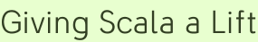

Giving Scala a Lift
I was literally dodging deer on my way to the Scala Lift Off.
Real Americans can spot the deer in this photo.
It was something of an adventure getting there, mostly a good one, that unfolded collectively on Twitter like all adventures these days. We flew, rode trains, or drove to FGM headquarters for the event. I may have been the only attendee to cover the last leg on this hippie bicycle highway:
Anyway. Let’s talk about the structure of the event. I’m not going to name names, but basically everyone was skeptical of the UNconference format. This is just normal for human society, being skeptical of things that conspicuously break convention. But we were all wrong! It was actually totally fine and not-awkward at all.
The main strength of the format is that it distributes the planning. With central planning you suffer from information not being as centralized as planning, from general planner frailty, and from an inability to adopt to late breaking information. A few of us sort-of planners did chitchat two months before the event, but in the end that didn’t determine the day’s activities. For example we couldn’t have known that @harryh from Foursquare would be attending and able to present on their use of Lift; he probably didn’t know that himself. But since the schedule was pieced together ad hoc in the morning, his talk did happen and it was a big hit.
So be skeptical all you want guys, but please don’t avoid unconferences, et al. It’s a smart format and it works. There’s actually fewer weird group activities at them than, say, your typical company off-site. No one even had to dance, say something unique about themselves, or otherwise act the fool. Above all, the focus seemed to be on not wasting time.
For this kind of event to work you need a number of close but separated spaces, most of them with projectors. That way, the different sessions can occur at once with people moving between them as they please. Getting such a space is the main obstacle to having such an event. We’re all in FGM’s debt for hosting this one.
One thing I took away from the experience is that the east coast Scala community is even stronger than I had thought. We’re like the west coast with slightly less polarfleece. The New York Scala Enthusiasts were particularly well represented. (Okay, we friggin’ dominated.) The event has raised the profile of our group and I hope inspired people to start or attend a Scala Meetup wherever they live. (Disclosure I work for Meetup now. You can self-organize and help pay my internet bills at the same time, ahoy!)
And now for a respectful and malice-free note about the location: twas a little remote. Defined, for some of us, as being complicated to get to without a car. Reston is a very nice place and a kind of corporate hub; it has a Hyatt and some other twenty-story buildings at its planned town center. For a lot of people it is more convenient and less expensive to stay there than, say, New York City. But there’s a way that big cities can be counter-intuitively cheaper and easier than Restons. Like, if you know people in the NY metro area, you can stay with them and get to our city center by 9 a.m. in many ways.
So I hope can host big events in locations that cater to all sorts of people, some in Reston and—yes, we’re talking about it now—some in New York. I will try to attend them all, but I think that a center-city event will draw in coders that the other can’t, and we need all kinds in Scala.
NYC can not however compete on wildlife sightings. Unless you count pigeons.
Codercomments
We have squirrels and rats too!
This is true. In fact I’m sure our squirrels and rats could take on Reston’s deer if they self-organized!
Hate to be speciesist, but self-organizing rodents are terrifying; please ban their kind from meetup.com.
scenes from the bike path: { 1, 2 }
Parking garages, ahoy!
Add a comment